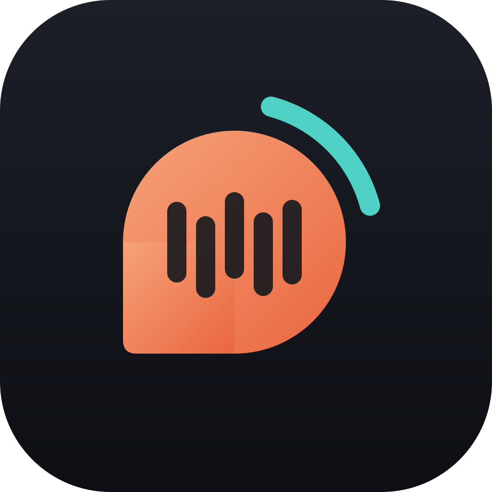

Speak languages with AI
Support · Updated 26 November 2026Need a person? Write to appwells31@gmail.com. Tell us your iPhone or iPad model, your iOS version, what you were doing and what happened instead. We read everything and usually reply within a few days.
Open Veyra, pick the language you want to practise and tap Talk. Your companion says hello and listens. Speak naturally; it follows whatever you want to talk about, corrects you gently and keeps the conversation going.
Tap any word, correction or explanation to see it in your own language. Set your language under Settings → Language → My language, or turn on Show meanings in my language to see them always. The first time, iOS may download a small translation pack from Apple.
IELTS, GRE and interview vocabulary live under Learn. Each word shows its meaning in your language, a definition, an example, a “say it” drill and a quick recall check. The exam word lists are in English.
You can practise English, Spanish, French, German, Italian, Portuguese, Dutch, Japanese, Korean and Chinese. The first screen of setup asks What do you want to speak?: tap a language, then Continue. To switch or add one later, open Languages. A language can show a short note, such as “Not on this iPhone yet” (Apple's on-device AI does not support it on your device), “Typing only on this iPhone” (no speech recognition for it) or “No voice yet: replies as text”. Each language keeps its own progress. The free version follows one language at a time; Veyra Plus lets you follow several.
A path is seven short talks, one a day, toward a goal: job interview, travel, exam speaking, small talk or a business meeting. Every practice language has its own paths, written for that language, with the matching speaking exam as its practice theme: IELTS for English, DELE for Spanish, DELF for French, Goethe for German, CILS for Italian, CELPE-Bras for Portuguese, CNaVT for Dutch, TOPIK Speaking for Korean and HSKK for Chinese. Japanese has JLPT-style speaking practice, because the JLPT itself has no speaking test. These are practice paths. Veyra is not connected to or endorsed by any exam body. Find your path on Today.
Pick how your companion teaches: a cheerful buddy, a strict coach or an exam examiner. Change it under Teaching style in Settings, or on the Something else sheet before a talk.
After a talk, and for the month under Progress, you can make a share card with your minutes, words used, best sentence and streak. The sheet shows exactly the image before anything leaves your iPhone, and it carries no name.
“Your conversations stay on this iPhone.” For a short plain explanation of what stays and what does not, tap How it works in setup, open Settings → Privacy & data → How Veyra keeps this private, or use the More options menu during a conversation.
Veyra needs Apple Intelligence: iPhone 15 Pro or later, or an iPad with Apple Intelligence, running iOS or iPadOS 26 or later. On other devices the app opens, but conversations are not available.
Also make sure your device language and Siri language are supported by Apple Intelligence.
There is no account. Veyra's AI is Apple's on-device model, so your conversations, memory and progress are created and kept on your device and are never sent to us. Speech is recognised on your device or, for some languages, by Apple. Anonymous usage and crash reports are on by default and never include what you say; turn them off under Settings → Privacy & data → Share anonymous usage & crash reports. The free version also shows ads from Google with your consent choices. Veyra Plus has no ads. See the Privacy Policy.
Mostly. The AI replies and translations run on your device. Some languages need a one-time download of speech or translation assets, speech recognition for some languages may be done by Apple's servers (which needs a connection), and ads and purchases need a connection too.
Download a Premium voice from Apple:
If you cannot find the page, search Settings for “Voices”.
Free users see ads. For the first 12 hours after you open Veyra, all Plus features are unlocked (ads still show). After that, Veyra stays free with daily limits, and you can watch a short ad to use a locked companion or mode for one conversation. Veyra Plus removes ads and unlocks every companion, voice and mode.
Subscribe from Settings → Veyra Plus. Cancel in iOS Settings → your name → Subscriptions. To restore after reinstalling or on a new device, tap Restore purchases in Veyra Plus settings. Refund requests go through Apple at reportaproblem.apple.com.
Progress lives on your device and follows a device backup and restore. Your Plus subscription follows your Apple Account; tap Restore purchases.
Settings → Privacy & data → Delete all data, or delete the app. We hold no copy.
Settings → Privacy & data: Ad privacy options and Share anonymous usage & crash reports. Tracking can also be changed in iOS Settings → Privacy & Security → Tracking.
No. They are affectionate but never sexually explicit, and they require a one-time confirmation that you are 17 or older.
You can practise 10 languages: English, Spanish, French, German, Italian, Portuguese, Dutch, Japanese, Korean and Chinese. The app itself is available in 17: English, Japanese, Chinese (Simplified and Traditional), Spanish, French, German, Portuguese (Brazil and Portugal), Korean, Italian, Dutch, Swedish, Danish, Norwegian, Turkish and Vietnamese.
Veyra adds 10 shortcuts you can say to Siri, find in the Shortcuts app or search in Spotlight, in your Siri language:
For example, say “Show my progress in Veyra”. “5-minute talk” and “Continue my path” are also available as controls for Control Center, the Lock Screen and the Action button.
Add the Veyra widget to your Home Screen for your progress and a Talk button, and watch a conversation's Live Activity on the Lock Screen.
The model runs on your device, so the first reply after a cold start takes longest, and a long talk can make the phone feel warm, like a game or video call. Veyra backs off by itself when the device gets warm or hot and shortens its replies. If the phone feels hot, pause the talk for a few minutes, close other heavy apps, take off a thick case and keep it out of the sun. Keeping iOS up to date helps.
Veyra requires iOS 26 or later and an Apple Intelligence compatible iPhone or iPad. Where a feature is unavailable on your device, Veyra falls back rather than failing.
Bugs, requests, or anything that felt wrong: appwells31@gmail.com.